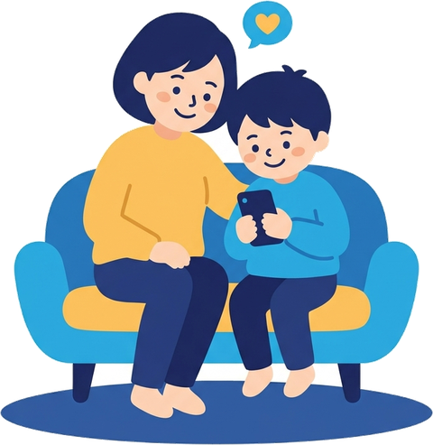
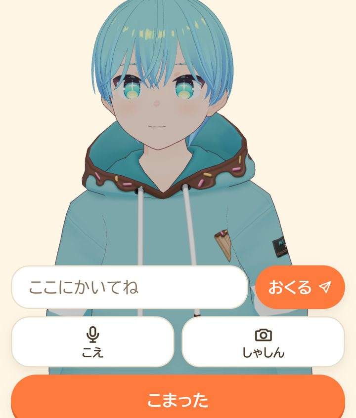
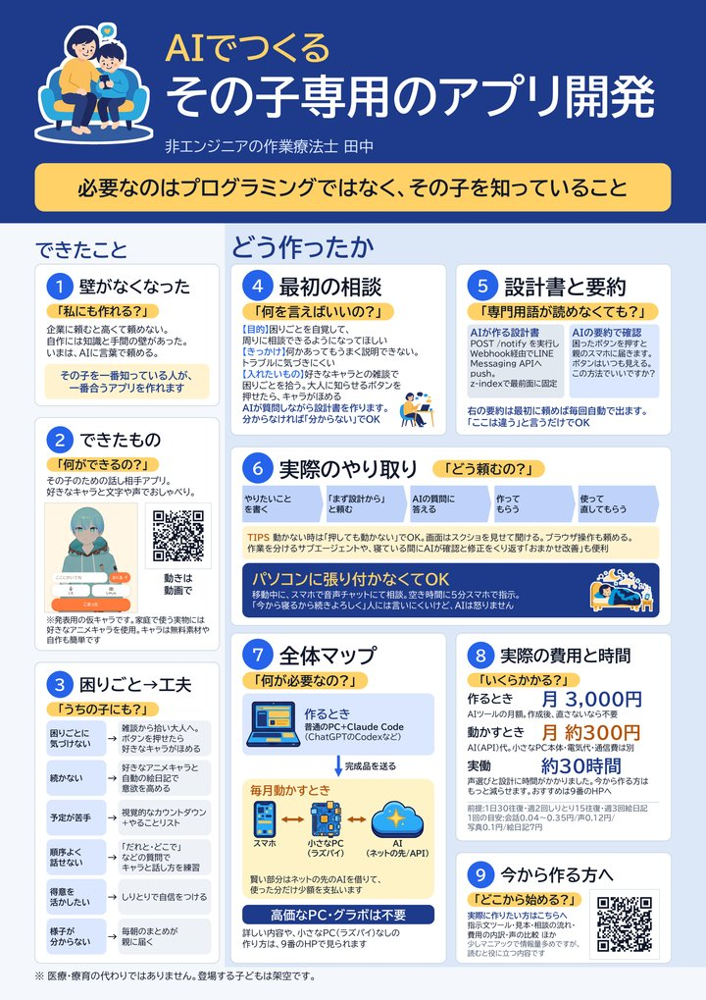
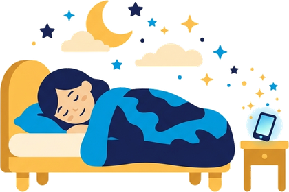
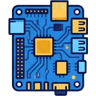
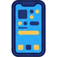
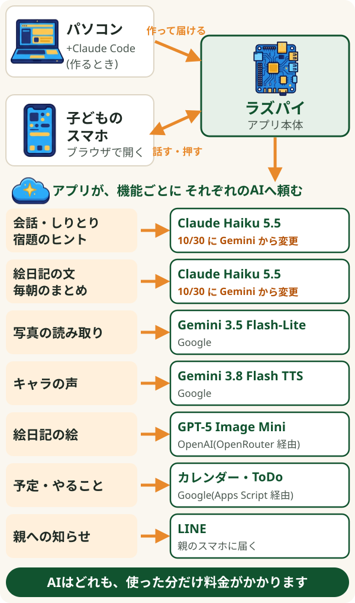

第24回 高知ふくし機器展 ポスター発表【詳細版】
AIでつくる
その子専用のアプリ開発
非エンジニアの作業療法士 田中
会場に貼ったポスターの内容を、くわしく解説したページです。

必要なのはプログラミングではなく、
その子を知っていること。
費用の目安: 作るとき月3,000円、動かすとき月約300円(くわしく)
1紹介動画と、実際のポスター
紹介動画(約2分20秒)

▶ 動画を見る別のページで開きます。音が出ます。実際のポスター
会場(2026年11月13日・14日)に貼ったポスターです。押すと大きな画像で開きます。

2指示文づくりツール
質問に答えると、AIに渡す最初の文章ができます。それをAIに貼り付ければ、AIが質問しながら一緒に設計してくれます。
発表者のアプリは「キャラが窓口になり、色々な機能につながる」形です。でも、どの子にもこの形が合うとは限りません。1つの困りごとに1つのシンプルなアプリのほうが合う子もいます。ツールでは形を選べます。迷ったら「分からない」でAIに提案してもらえます。
書いた内容はどこにも送られず、保存もされません(画面を閉じると消えます)。本名や学校名は書かないでください。
3頼み方の流れ
発表者の実際のやり取りは、とても長いものでした。まず、今から始める方がつまずかずに進める流れにまとめ直しています。その下に、実際のやり取りの再現を載せています。
- ツールで最初の文章を作る その子のこと、困りごと、どうなってほしいかを書きます。分からない所は空でかまいません。
- AIに貼り付けて送る パソコンで、作業をしてくれるAI(発表者は Claude Code)を開き、文章を貼り付けます。
- AIの質問に答える
AI「困ったときに大人へ知らせる方法は、どれがよいですか? ①ボタン ②キャラに話すと知らせる ③両方」あなた「③で。ボタンを押せたら、キャラにほめてほしいです」分からなければ「分からない」で大丈夫です。AIが選択肢を出してくれます。
- 要約を読んで、違う所だけ言う AIは専門用語の設計書と、あなた向けの短い要約を出します。要約を読んで「ここは違う」と言えば十分です。
- 小さく作って、使って直す
まずは会話だけ、など小さく作ってもらい、スマホで試します。
あなた「ボタンを押しても動かない」(画面のスクショも見せる)専門的な説明はいりません。見たままを伝えれば直してくれます。
- 空き時間や寝ている間に任せる
移動中にスマホの音声で相談したり、空き時間に5分だけ指示したりできます。止める条件を決めておけば、寝ている間に確認と修正をくり返してもらうこともできます。

実際のやり取り(再現)
完成したアプリから逆算して、実際にあったやり取りを短く再現したものです。言葉は読みやすく整えています。タブを押すと切りかわります。
最初の相談(1日目)
実際は、ここで目的・使う人・やらないこと等が埋まるまで、2〜3日かけて少しずつ答えました。
設計の要約を確認する
専門用語の設計書はAIが作ります。こちらが読むのは要約だけでした。
声選び(一番時間がかかった所)
実際は、ここで聞き比べを何度もくり返しました。下の「声の比較」を使えば、ここを短くできます。
小さく作って、使って直す
専門的な言い方はいりません。見たまま・感じたままを伝えるだけで直してもらえました。
使いながら機能を足す
最初から全部を作らず、子どもの様子を見て1つずつ足しました。
空き時間・寝ている間に任せる
止める条件を先に決めておくのが大事でした。
ここから くわしい解説
4費用
月約300円の前提: 1日30往復の会話、週2回しりとり15往復、週3回の絵日記。
- 1回あたりの目安: 会話 0.04〜0.35円、声 0.12円、写真の読み取り 0.1円、絵日記 7円
- 作った時間は実働 約30時間。そのうち約6割は声選びでした。下の比較表を使えば、もっと短くできます
- 小さなパソコン(ラズパイ)を使う場合は、本体代が別にかかります。電気代はわずかです
金額は発表者の場合の目安です。使い方やAIの料金改定で変わります。
5必要なもの(発表者の環境)
ポスターでは「パソコン・AI・ラズパイ・スマホ」と短く書きました。ここでは、発表者の実際の環境をくわしく載せます。
機器と、それぞれの役目

動かす: ラズパイ(Raspberry Pi 3)家の中で一日中アプリを動かしています。古い型でも動きます。なくても作れます(下の8へ)。
使う: 子どものスマホ・親のスマホ子どもはブラウザでアプリを開くだけ。親には LINE で知らせが届きます。発表者のアプリのつながり(全体図)

図を押すと大きく開きます
会話・しりとり・宿題のヒントなどは、2026年10月30日に、Gemini(3.5 Flash-Lite)から Claude(Haiku 5.5)に切りかえました。このように、使いながらAIを入れかえることもできます。くわしい経緯は下にあります。
会話を Gemini から Claude に変えた理由(10月30日)
最初は、会話もすべて Gemini の安いモデル(Flash-Lite)で動かしていました。キャラになりきって話すのは、今でも Gemini のほうが上手だと感じています。値段も安く、Gemini のままで十分だと考えていました。ただ、次のことがあって切りかえました。
きっかけは宿題のヒント機能です。この機能を作ったとき、安いモデルは「答えを言ってしまう」「正しい答えを間違いと言う」ことが多くありました。
上のモデル(Gemini Flash)にするとよくなりましたが、値段が約2.5倍で、2027年からはさらに倍に上がる予定でした。そこで、同じ試験を Claude の安いモデル(Haiku)でも行いました。宿題もふだんの会話も問題なかったため、2026年10月末に会話を Claude に切りかえました。写真の読み取りは Gemini のままです。
TIPS AIには、それぞれ得意なことがあります。キャラのなりきりなら Gemini、決まりを守った受け答えなら Claude、のように、機能ごとに合うAIを選ぶのがおすすめです。使いながら入れかえることもでき、その作業も Claude Code に頼めます。
APIとAPIキーって何?
アプリが、ネットの先のAIに「この返事を考えて」と頼むときの注文の窓口が API です。その窓口を使うための会員カードが APIキー(キー=鍵とも呼ばれます)です。
アプリの中で起きていること
- 📱① 子どもが話す「きょう、がっこうで こまったことがあった」
- 🏠② アプリが、会員カードを付けて注文する家のラズパイなどで動くアプリが 💳 APIキー を付けて、AIの会社の窓口(API)へ送る
- 🤖③ AIの会社が返事を作る注文を受けて、返事の文や声を作って返す
- 💬④ キャラが返事をする「そっか、なにが あったの? ゆっくりで いいよ」
⚠ このカード(APIキー)を人に見られると、勝手に使われてしまいます。
- APIキーは、各社のページでご自身が発行します(Claude Code に手順を案内してもらえます)
- キーはプログラムの中に直接書かず、別の設定ファイルに分けてもらいます。最初の指示文にも、この約束を入れてあります
- 各社のページで「月の上限額」を決めておくと、使いすぎを防げます
無料の Gemini API で試すには
Google の Gemini API には無料枠があります。ただし、今(2026年11月)無料で使えるのは、主に会話用の軽いモデルです。声や絵には使えないことが多く、試作で会話を試す程度と考えてください。
- 送った内容が、Google のサービス改善に使われます(人が読む場合もあります)。子どもの名前や特性、会話の中身など、個人の情報は送らないでください。
- 1分・1日に使える回数に上限があり、超えると止まります。毎日使うアプリには足りません。
- 無料で使えるモデルや上限は、予告なく変わります。
- 発表者は、子どもが実際に使う段階からは、すべて有料(送った内容が改善に使われない)にしています。
6作るAIの選び方
よく聞く Claude(クロード)、ChatGPT(チャットGPT)、Gemini(ジェミニ)は、どれも「話しかけると答えてくれるAI」です。アプリ作りで大事なのは、パソコンの中で実際に作業までしてくれる道具があるかどうかです。
Claude(話す)/ Claude Code(作業まで)
Anthropic
◎ 発表者が使用。説明が丁寧で、確認しながら進めやすい
ChatGPT(話す)/ Codex(コーデックス・作業まで)
OpenAI
◎ 有名で情報が多い。Claude と並ぶ候補
Gemini(話す)/ Gemini CLI(作業まで)
△ 今のところ、こうしたアプリ作り(プログラム作り)には、あまり向いていない印象です
「話すAI」と「作業までするAI」の違い
話すAI
Claude / ChatGPT / Gemini(ふだんスマホで使っている、あのAI)
- あなた: 「保護者会のお知らせ文、下書きを手伝って」
- AI: 下書きを文章で出す
- あなた: 「もう少しやわらかく」
- AI: 直した文を出す(相談相手のように、やり取りをくり返す)
- あなた: コピーして、メールやLINEに貼って送る
アプリ作りでも同じで、プログラムを文章で出してくれますが、貼り付け・保存・動かす・直すのは自分です。
手を動かすのは、あなた。
作業までするAI
Claude Code / Codex
- あなた: 「〇〇を作りたい」
- AI: パソコンの中にファイルを作る
- AI: 自分で動かして確かめる
- AI: エラーがあれば自分で直す
- あなた: できた物を見て「ここを変えて」
手を動かすのは、AI。あなたは確かめるだけ。
プログラミングが分からない人には、作業までするAIが向いています。どちらも同じ会社の同じ有料プランで使えることが多いです(Claude なら Claude Code、ChatGPT なら Codex)。
- 費用: どちらも月20ドル(約3,000円)の有料プランが入口です。発表者は Claude Pro(月約3,000円)で Claude Code を使いました。使える量や、どのプランに含まれるかはよく変わるので、申し込む前に公式ページで確認してください。
- 迷ったら: Claude か ChatGPT のどちらかで大丈夫です。最初の相談(指示文づくりツールで作った文章)を両方の無料版に貼って、話しやすいほうを選ぶ方法もあります。
- アプリの中で使うAIは、作るAIとは別に、機能ごとに選べます。発表者の組み合わせは、上の「5. 必要なもの」に載せています。
2026年11月時点の情報です。
7声の比較
聞き比べ
同じ文を、それぞれの声のAIで読ませました。1つの文の中に「ふつう」「元気」「ささやき」の部分があります。
こんにちは、今日もお話ししようね。ふつうえっ、テストで百点だったの? すごい、やったね!元気しーっ、あそこに猫がいるよ。そーっと触ってみよう。ささやき
声は、どれも各社が用意している声です。2026年11月3日に作成。
くらべる表
2026年11月2日に調べた時点の情報です。料金や無料枠はよく変わります。使う前に、各社の公式ページで最新の情報を確認してください。
Gemini(Google)
声のAI: Gemini 3.8 Flash TTS(発表者が使用)。ひとつ前の 3.1 Flash TTS もあり
とても自然・遅め・有料
- 無料で使える分
- なし(有料で使う前提)
- 1時間分の声の目安
- 約130円2027年1月から約2倍(約260円)に値上がり予定
- 本人確認
- 不要
- 感情の表現
- 「楽しそうに」「ささやくように」など、文章で指示できる
- 返ってくる速さ
- 遅め(数秒〜10秒ほど)
Qwen(Alibaba)
声のAI: Qwen3.1 TTS Flash(公式)/Qwen3-TTS(別サイト経由)
自然・とても速い・安い
- 公式(Alibaba Cloud)
- 新規登録から期限つきの無料分あり。1時間 約20円(安い型)。返ってくる速さはとても速い。感情は英語の決まった印(例: [happy])を文の前に付けて指定できる
- 本人確認
- 公式で有料分を使うには、身分証(免許証など)の提出を求められることがある。無料のブラウザ版(チャット)は、アプリからは使えない
- 身分証を出したくない場合
- 別のサイト(DeepInfra など)経由で使える。1時間 約75円、事前チャージ式(5ドル〜)。声色や話し方の指示はほぼ効かない。速さは1〜2秒ほど
Microsoft(Azure)
声のAI: Azure AI Speech(ニューラル音声)
標準的・速い・無料枠が大きい
- 無料で使える分
- 毎月の無料枠あり(公式では月50万文字。超えた分は有料)
- 本人確認
- 不要(カードの登録あり)
- 感情の表現
- 日本語の声(Nanami など)は「おしゃべり風・明るく・接客風」の3種類だけ。悲しい・怒るなどは選べない
- 返ってくる速さ
- 速い
- 備考
- カタコト感(機械っぽい読み方)が強めです。キャラの声としては物足りないことがあります
Cartesia
声のAI: Sonic 3.6
自然・とても速い・無料プランあり
- 無料で使える分
- 無料プランあり(月2万文字=約50分。お金をもらわない個人の利用向け)
- 1時間分の声の目安
- 有料プランは月5ドル(約750円)で10万文字から
- 本人確認
- 不要
- 感情の表現
- 文章の中身から自動で感情を読み取る方式。感情を指定する印もあるが、公式では英語だけ対応
- 返ってくる速さ
- とても速い(1秒以内)
- 1時間分は、約2.4万文字、1ドル150円で計算した目安です。
- 無料で始めやすいのは Microsoft と Cartesia です。どちらも一定の量を超えると費用がかかります。
- 「1時間分」は声の長さです。1日30回ほど話す使い方なら、1か月で1時間分に届かないことが多いです。
- 発表者は Gemini を使いました(自然さを優先)。速さを優先するなら Qwen や Cartesia も候補です。
- 人の声をまねる機能は、悪用のおそれがあるため、このページでは扱いません。
8ラズパイはなくても大丈夫
ラズパイがあれば便利ですが、なくてもできることはたくさんあります。ラズパイは「家でアプリを一日中つけておく」ための物で、アプリ作りに必須ではありません。
なしで作る方法を読む
- 無料のホームページ置き場を使う: 予定表・やることリスト・タイマーなど、画面だけで動くアプリは、無料の置き場に置けばスマホで使えます。合言葉(パスワード)を付けたり、「指定した Google アカウントの人だけ入れる」ようにしたりすれば、家族だけで使えます
- ネットの先の小さなサーバーを使う: AIとの会話など、APIキーを隠す必要がある部分も、無料枠のあるサービスで動かせることが多いです
- いつものパソコンで動かす: パソコンをつけている間だけ使えればよい場合
ラズパイがあると便利なのは、夜中や朝の自動の処理(毎朝のまとめを送るなど)や、記録を家の中だけに置きたい場合です。どれが合うかは、ツールで「分からない」を選べばAIが比べてくれます。
9キャラの用意と性格づけ
キャラの見た目だけでなく、性格や口調も、AIと相談しながら決められます。「この子が安心して話せるキャラにしたい。性格を3案出して」のように頼めます。
AIは、性格を文章で説明するだけより、「こう聞かれたら、こう返す」という見本を一緒に渡すと、ぐっとキャラらしく話します。発表者の娘アプリでも、ここが一番効きました。
例(架空のキャラ)
【キャラの設定】名前は「モコ」。のんびりして、やさしい。自分のことは「ぼく」。語尾は「〜だよ」。お説教や長い話はしない。
【やり取りの見本】
子ども「しゅくだい やだ」→ モコ「そっか、やだよね。1もんだけ いっしょに みてみる?」
子ども「きょう たのしかった」→ モコ「わあ、よかったね! なにが いちばん たのしかった?」
見本は5〜10個あると安定します。見本づくりもAIに手伝ってもらえます。なお、キャラになりきって話すのは Gemini が得意です(5. の「会話を Gemini から Claude に変えた理由」を参照)。
キャラの見た目の用意(くわしく読む)
- VRoid Studio(無料): 3Dのキャラを自分で作れます。見本のキャラもあり、この動画でも使っています
- 絵のキャラでもかまいません。Google Flow(Googleの、絵や動画を作るサービス)なら、Googleアカウントで絵を無料で作れる範囲があります(2026年11月時点。動画は回数の制限あり)。発表者もポスターのイラストに使いました
- AIで作った絵は、実在のキャラや作家の名前を入れて作らないでください。公開するときは、各サービスの規約を確認してください
- 好きなアニメのキャラは、家庭の中で子どもが使うだけにしてください。ネットへの公開や配布はできません
10つまずきやすい所
くわしく読む
- APIの登録が英語: ブラウザを操作できるAIに、画面を見ながら案内してもらえます
- 声選び: 一番時間がかかりました。上の比較表で候補をしぼると早く決まります。安くても、身分証の提出が必要な所があります
- 外から家のアプリにつなぐ: 外から家につなぐ道具(Tailscale など)を使います。設定と、使う人の管理が必要です
- LINEなどへの通知: 外部サービスの登録が必要です。無料で送れる数に上限があります
- ファイルの置き場所: 最初に作業用のフォルダを作り、アプリごとに分けると迷いません
11見本: 発表者のアプリに近いものを作りたい方へ(参考)
キャラの性格づけのコツは「9. キャラの用意と性格づけ」にあります。
これは参考です。おすすめは、上の「2. 指示文づくりツール」で、その子に合わせた最初の文章を作る方法です。
発表者のアプリにほぼ近いものを試しに作ってみたい方は、下の文章の［ ］の中を書き直して貼れば、似たものができると思います(【 】は見出しなので、そのままで大丈夫です)。
かかる時間の目安(Claude Code)
最初の会話と「こまった」ボタンまで: 約3〜5時間
下の機能をひととおり: 約15〜20時間
発表者は声選びなどの試行錯誤を含めて約30時間でした。AIからの質問に答える時間も含みます。
APIキー(AIを使うための鍵)の発行や支払いの登録は、ご自身で行います。AIが手順を案内します。
見本の文章を開く
「ほぼこのまま」と書きましたが、作業の途中でAIからの質問には答える必要があります。好きなアニメのキャラは家庭の中だけで使い、ネットに公開しないでください。